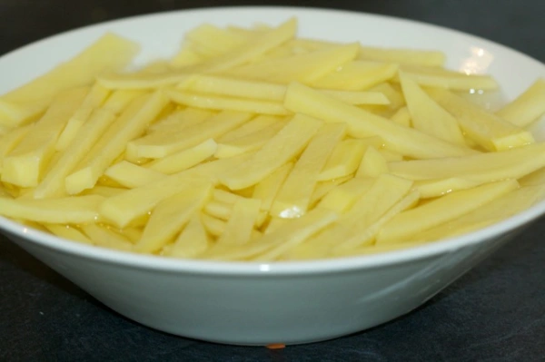
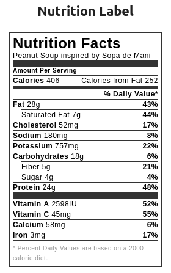

Sopa de mani - Bolivian recipe
What is sopa de mani?
Sopa de mani or soup with peanuts is one of Bolivia‘s most traditional soups. It is prepared with peas, potatoes, beef, roasted macaroni and spices such as oregano and cumin.
This soup is then sprinkled with chopped parsley and French fries to make a truly original soup. Sopa de mani is a much denser soup than Bolivian sopitas. It is also slightly spiced, making it a tasty, rich and very nourishing dish.

What is the origin of peanut?
It is believed that peanut comes from Bolivia, which explains the inventiveness of its people to accommodate this delicious dry nut. The hometown of sopa de mani is Cochabamba. Peanuts were already grown in South America when the conquistadors arrived. It was not until the 17th century that peanuts were finally imported into Europe. Jean de Léry, great traveler, writer and missionary French described this plant under the name of manoki. Portuguese ships then imported peanut to Africa in the sixteenth century and it was cultivated as early as 1560 in Senegambia. From there, it spread to Europe. Today, it is very much appreciated in Senegal and Gambia and has even become a staple of Senegalese cuisine.
ingredients
- 1 cup roasted peanuts shelled, peeled
- 3 garlic cloves
- 1 white onion medium
- 1 lb chuck roast beef cut in chunks
- 3 tbsp olive oil
- 1 cup green peas
- 1 red pepper use half for the soup and half for decoration at the end
- 0.5 cup chopped carrots
- 2 celery stalks
- 1 potato
- 0.5 tsp aji amarillo optional
- turmeric just a pinch
- french fries for decoration
Steps
- Boil the peanuts for about 30 minutes, set aside to cool down.
- Saute the chopped onions & minced garlic in olive oil until onion becomes translucent. Keep heat on medium.
- Add beef chunks and mix well so the meat can brown on both sides.
- Add chopped celery, carrots, red peppers and green peas.
- Blend the boiled peanuts with 1 cup of water, I use several settings in my blender to make sure the mixture is really liquefied. At the end it should look like a smooth paste.
- Add the peanut paste to the pot, mix well with the meat and vegetables. Add 2 cups of hot water and mix everything well.
- Cut the potato in chunks and add them to the soup. Stir everything well, add a pinch of turmeric and aji amarillo if you like the soup spicy. Add salt to taste, go slow with salt if you are using roasted peanuts because they do have some salt to start with.
- Cover the pot and lower the temperature from medium to low heat, let the soup cook for about 30 minutes or until meat is tender and soft to eat.
- Serve in a shallow bowl and decorate with parsley, red pepper strips & french fries.
Some images may help

Calories

Return Home